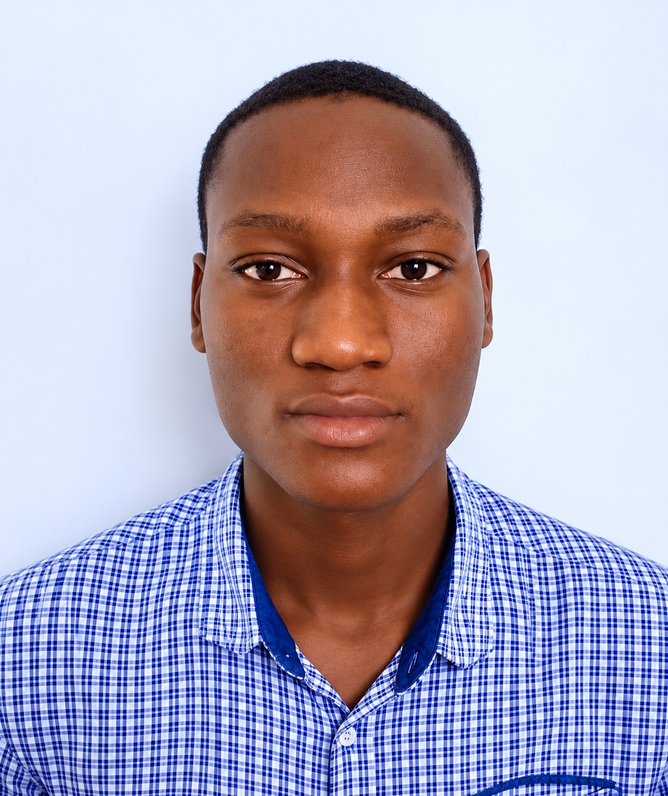
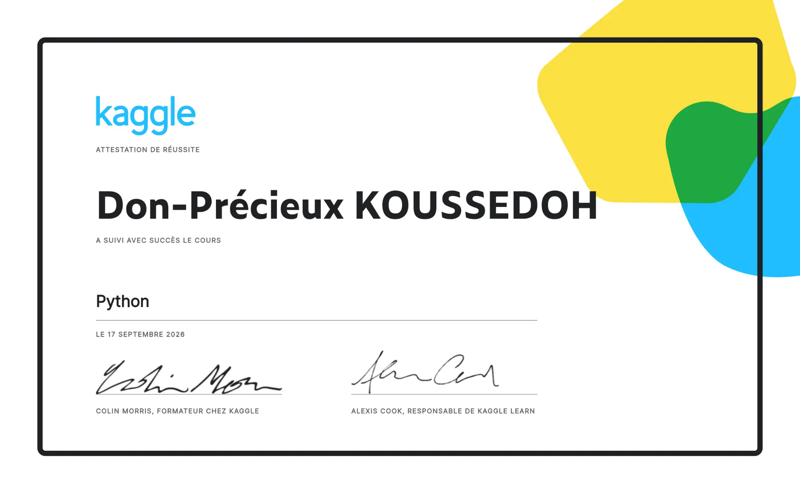
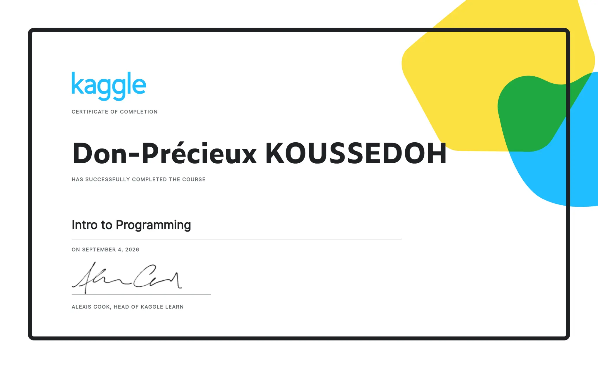

01
Programmation
Python★★★★★
- Algorithmique
- Git & GitHub · bases
Étudiant en Informatique | Passionné de Data Science & Intelligence Artificielle
Transformer les données
en solutions utiles.

Je suis Don-Précieux Missimahu KOUSSEDOH, étudiant en première année de Licence en Informatique à l’Institut de Formation et de Recherche en Informatique (IFRI), Université d’Abomey-Calavi.
Passionné par la Data Science, l’Intelligence Artificielle et les nouvelles technologies, j’apprends, j’expérimente et développe mes compétences grâce aux formations en ligne et aux projets personnels.
Mon ambition : contribuer à des solutions numériques innovantes, utiles et porteuses d’impact en Afrique et dans le monde.
« Learning today,
building tomorrow. »
Je construis mes compétences
pas à pas, avec méthode.
Chaque expérience est une occasion
de transformer la théorie en pratique.
Un tableau de bord Google Sheets conçu pour donner aux commerçants une vue claire de leur activité et de leurs stocks.
Des micro-cours pratiques pour renforcer mes bases en programmation et découvrir le fonctionnement du Machine Learning.
Participation à des formations internationales pour explorer les méthodes et les outils de la donnée.
Un parcours en construction,
guidé par l’envie d’apprendre.
Participant à l’édition 2025.
Formations internationales en Data Analysis, Python et Machine Learning.
Première année — Université d’Abomey-Calavi.
Deux attestations Kaggle Learn : Python et Intro to Programming.

PythonKAGGLE LEARN · 17 SEPT. 2026
Intro to ProgrammingKAGGLE LEARN · 2026Curieux d’apprendre, de collaborer et de contribuer à des projets qui ont du sens.
Téléphone, e-mail, LinkedIn et GitHub renseignés.